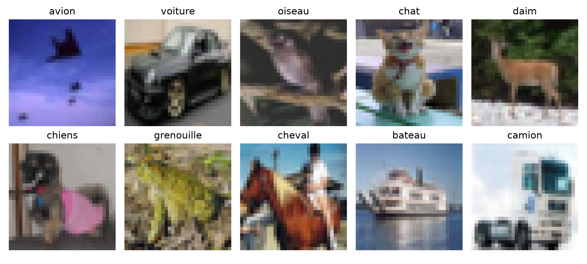
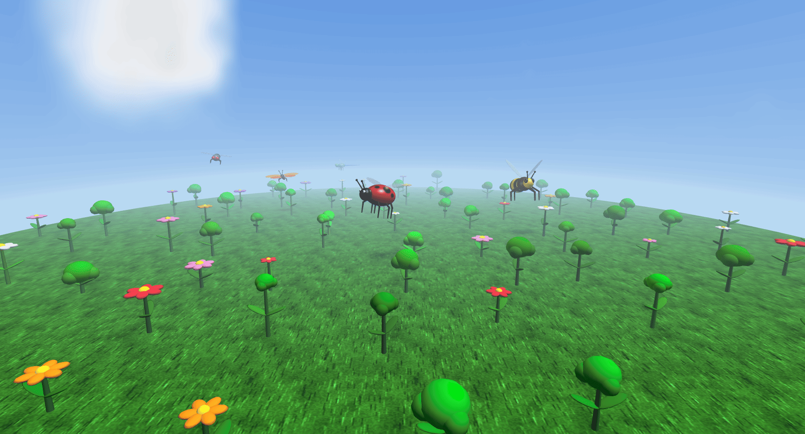

Étudiante en M1 Informatique à l’Université d’Angers, je m’intéresse à l'intelligence artificielle sous un angle théorique et appliqué : machine learning, deep learning, traitement d'images et du signal. Passionnée par la résolution de problèmes complexes, la modélisation et l'optimisation, je combine rigueur mathématique et logique pour explorer des approches d'IA à forte dimension scientifique.
Lauréate de la bourse Femmes en Sciences 2026Université d'Angers
Université d'Angers
🏅 Classée 2e de promotion (2 ans consécutifs)
USTHB, Alger
🥇 Major de promotion en 1ère année
Université d'Angers
Université d'Angers
USTHB-Alger

Classification multi-classes d’images couleur de 32×32 pixels réparties en 10 classes. Comparaison progressive de plusieurs modèles : des approches classiques (K-NN à environ 22%, régression logistique à 39,5% et perceptron multicouche à 49,5%) vers des architectures spécialisées en vision par ordinateur (CNN à 73,5% et ResNet-18 atteignant 94,1%).

Modélisation d’un univers 3D animé en C et OpenGL (GLUT). Ciel sphérique texturé, sol herbeux optimisé (display lists), coccinelle pilotable au clavier et quatre insectes autonomes avec animations de vol articulées.